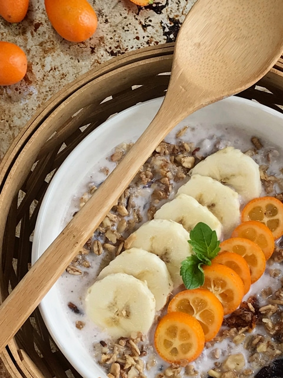

Autumn Harvest Muesli
 – raw, vegan, gluten-free –
– raw, vegan, gluten-free –
What does Autumn feel like? The visual hallmark of the season is the changing colors of the leaves, but are chilly temperatures the only way to feel Autumn?
As the weeks pass and the weather changes, we begin to experience cooler days. Quickly our clothing reflects what we feel as we snuggle up in wool sweaters, pull out the footed jammies, thick socks, and perhaps even a puffy vest or wool coat before we go outside.
But there are other ways to feel Autumn; we just need to look at this time of year with texture. Have you ever gone through a corn maze or maybe sat down on a bale of hay? Autumn.
Have you ever happened upon a pumpkin garden, lifting each one, examining the smooth and lumpy surfaces? Just the other day Bob and I came across Warty Pumpkins… now those are a sight to behold. If you haven’t seen one yet, at least Google “Warty Pumpkins”… they are so ugly they are beautiful. :)
Another way to feel Autumn is in the air. Not just the chill but just in the change of the intensity of sun blazing down on you. Or perhaps the still air is crisp, drier or more humid. Does it cause your hair to frizz or flatten?
There are so many beautiful ways to experience this time of year. One other way to feel it is by enjoying this muesli for breakfast. The porridge-like, nutty, textured leaves you feeling as though you just had an encounter with Autumn…
Oats, pumpkin, maple syrup, cinnamon, nutmeg, and ginger…. (and everything in between)… all make me feel as though I am ingesting a piece of Autumn with each and every bite. What more can I say? Other than, make it, enjoy it, and comment below! Blessings, amie sue

Ingredients:
Yields roughly 4 cups of cereal
- 4 cups raw, gluten-free rolled oats, soaked
- 3/4 cup sugar pumpkin puree
- 3/4 cup dried cranberries or goji berries, re-hydrated
- 1/2 cup raisins
- 1/2 cup raw almonds, soaked & chopped
- 1/2 cup unsweetened dried coconut
- 1/4 cup raw pumpkin seeds, soaked
- 1/4 cup maple syrup or equivalent
- 1 tsp vanilla extract
- 1 tsp ground Ceylon cinnamon
- 1/4 tsp ground nutmeg
- 1/4 tsp ground ginger
- 1/2 tsp Himalayan salt
Preparation:
- After soaking the oats, nuts, and seeds as instructed in the links above, drain and rinse them before adding to the mixing bowl.
- Rinse the oats under cool water for about 2 minutes, agitating it with your fingers the whole time.
- Squeeze the excess water from them and add to the mixing bowl.
- Now add the remaining ingredients: pumpkin puree, dried fruit, almonds, coconut, pumpkin seeds, sweetener, vanilla, cinnamon, nutmeg, ginger, and salt. Mix well.
- Spread the batter on the teflex sheets that come with the dehydrator.
- If you don’t have those, you can use parchment paper, but don’t use wax paper because the granola will stick to it.
- Dehydrate at 145 degrees (F) for 1 hour, then reduce to 115 degrees (F) and continue to dry for up to 24 hours.
- Partway through, flip the tray over onto the mesh screen and peel off the teflex sheet.
- Continue dehydrating until desired dryness is reached.
- Once done and cooled, break up the batter and place in the food processor, fitted with the “S” blade. Pulse until it reaches a small crumble, this will create an excellent muesli/porridge texture.
- Store the cereal in air-tight containers. Store on the counter for 1-2 weeks, fridge for 2-4 weeks and in the freezer for several months.
Culinary Explanations:
-
Why do I start the dehydrator at 145 degrees (F)? Click (
here) to learn the reason behind this.
-
When working with fresh ingredients, it is essential to taste test as you build a recipe. Learn why (
here).
-
Don’t own a dehydrator? Learn how to use your oven (
here). I do, however honestly believe that it is a worthwhile investment. Click (
here) to learn what I use.
© AmieSue.com